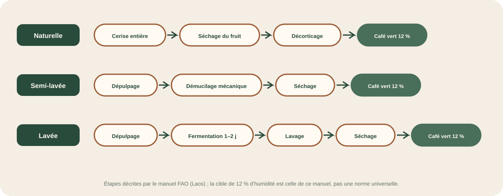
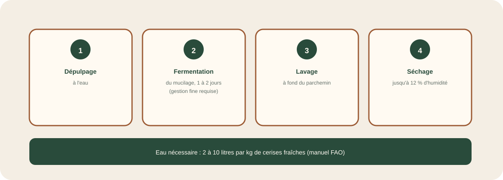
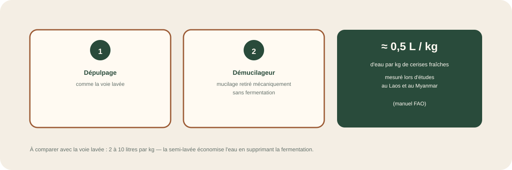
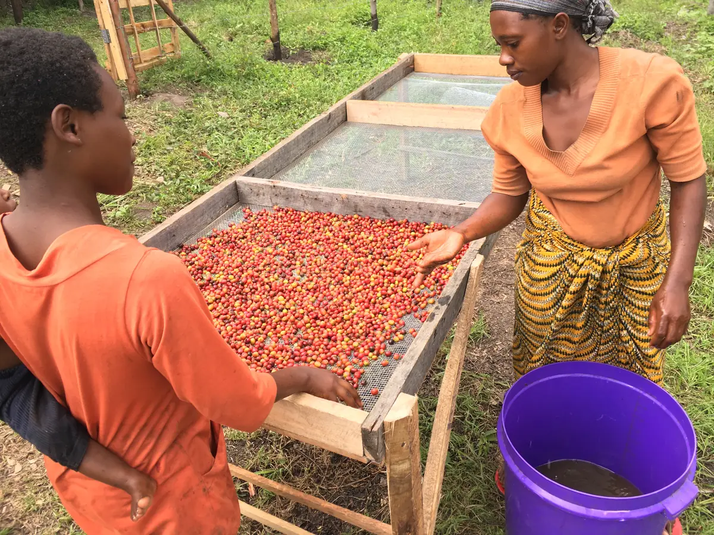
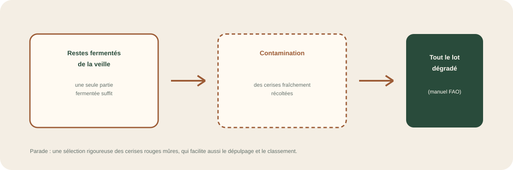
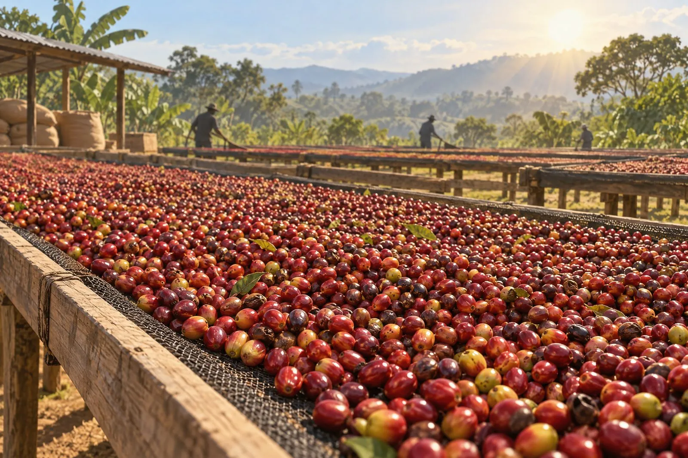

Post-récolte
Entre la cerise cueillie et le café vert, la transformation influence la qualité finale. Les sources citées ici décrivent surtout les méthodes naturelle, semi-lavée et lavée.
L’essentiel en trois points
- Le manuel FAO (Laos) vise un café vert à 12 % d’humidité pour l’export ou la torréfaction. C’est la cible de ce manuel, pas une norme universelle [1].
- Trois méthodes de base : naturelle, semi-lavée, lavée. Elles diffèrent par le retrait du mucilage, l’eau et le risque de fermentation [1].
- Selon ce manuel, une qualité perdue par surfermentation, moisissure, odeur ou dommage au grain ne se récupère pas [1].
Approfondir
Touchez un titre pour ouvrir ou fermer la rubrique.
Du fruit au café vert
Selon le manuel FAO pour le Laos, la transformation mène la cerise fraîche à un grain vert propre à 12 % d’humidité. La chaîne citée comprend récolte, dépulpage, fermentation, lavage, séchage, décorticage, nettoyage, classement, stockage et transport ; elle varie selon la méthode : la voie naturelle saute le dépulpage, la semi-lavée la fermentation [1].

Voie lavée
Dans la description du manuel FAO : dépulpage à l’eau, puis le mucilage (couche sucrée) fermente un à deux jours, puis lavage à fond du parchemin, séché jusqu’à 12 %. Le manuel indique 2 à 10 L d’eau par kg de cerises fraîches et une gestion fine de la fermentation [1].

Voie semi-lavée
Après dépulpage, le mucilage est retiré mécaniquement par un démucilageur, sans fermentation. Le manuel indique environ 0,5 L d’eau par kg de cerises fraîches, mesuré lors d’études au Laos et au Myanmar [1].

Voie naturelle
Opération en une étape : le grain sèche dans le fruit entier jusqu’à 12 %, puis la cerise sèche est décortiquée. Le manuel la juge peu coûteuse mais de qualité basse et non recommandée, dans le contexte du Laos où elle sert surtout au robusta. Ce jugement est celui du manuel, d’autres sources décrivent des cafés naturels de grande qualité (à documenter) [1].


Lots et contamination
Selon le manuel FAO, toute partie fermentée de la veille contamine les cerises fraîchement récoltées et dégrade tout le lot [1]. Une sélection rigoureuse des cerises rouges mûres facilite le dépulpage et le classement [1].

Procédé honey
Un « honey » est un café dépulpé puis séché avec son mucilage collant ; les définitions précises varient d’un producteur à l’autre [2]. Au Costa Rica, on distingue généralement trois degrés, du jaune au rouge puis au noir [3]. Ces appellations ne sont pas normalisées : demandez le procédé réel.

Image d’en-tête : illustration générée pour le site, à valeur éditoriale, pas un document photographique. Les autres visuels de la page portent leur propre crédit en légende.
Termes du dictionnaire
Références
Les affirmations renvoient aux références numérotées ci-dessous, avec leur date de consultation. Les rubriques marquées « à documenter » n’ont pas encore de source vérifiée et n’affirment rien. Certaines sources sont secondaires : leur nature est indiquée dans leur intitulé.
- FAO, Arabica coffee manual for Lao PDR : transformation (ae939e) · consulté le 20 novembre 2026
- Daily Coffee News (2017), « Honey process: get to know this sweetheart of specialty coffee » · consulté le 20 novembre 2026
- Barista Magazine, « Hello, Honey » : le procédé honey du Costa Rica · consulté le 20 novembre 2026
Révision éditoriale : . Les dates et limites des données restent celles indiquées dans leurs sources.